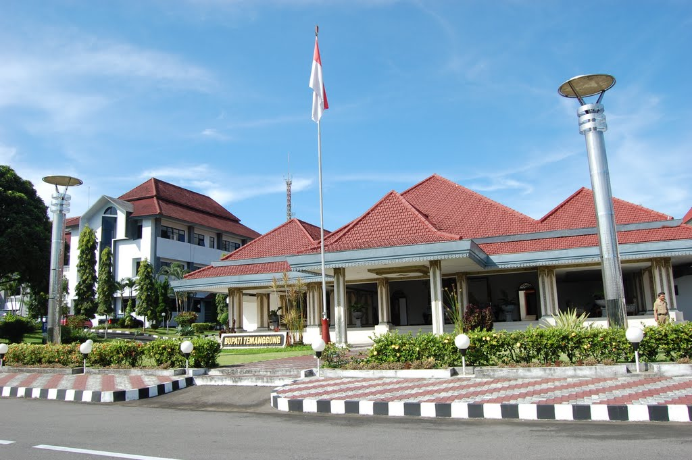
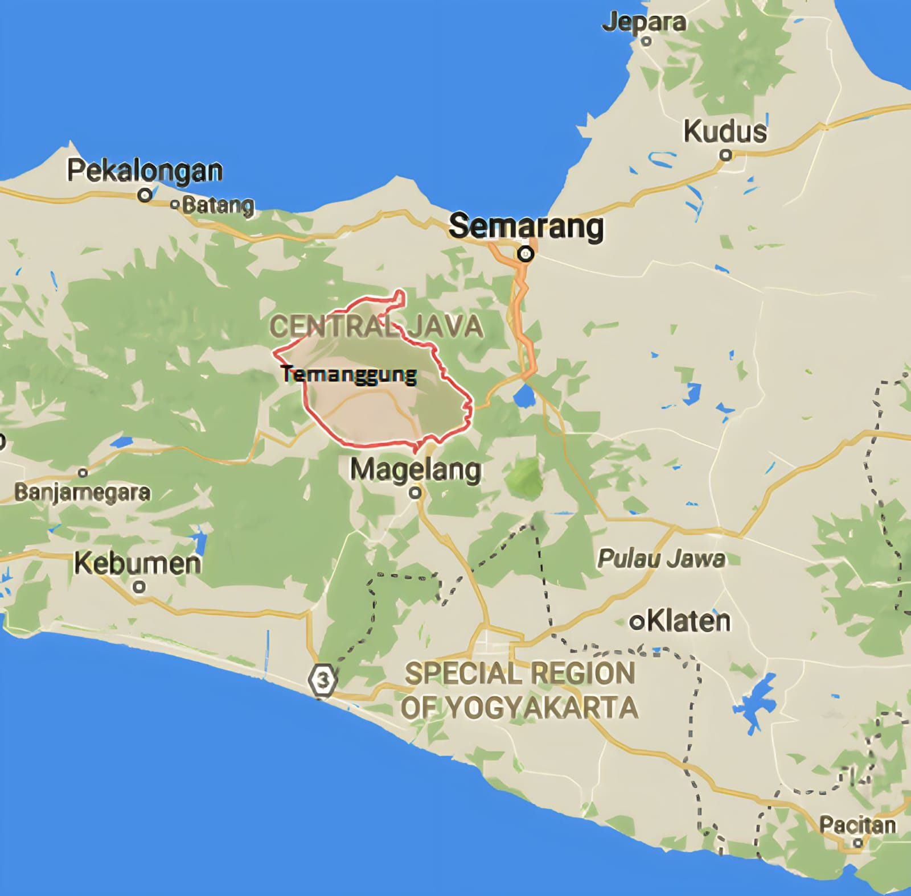
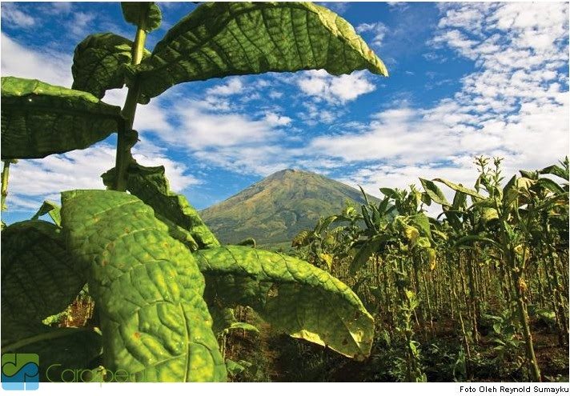
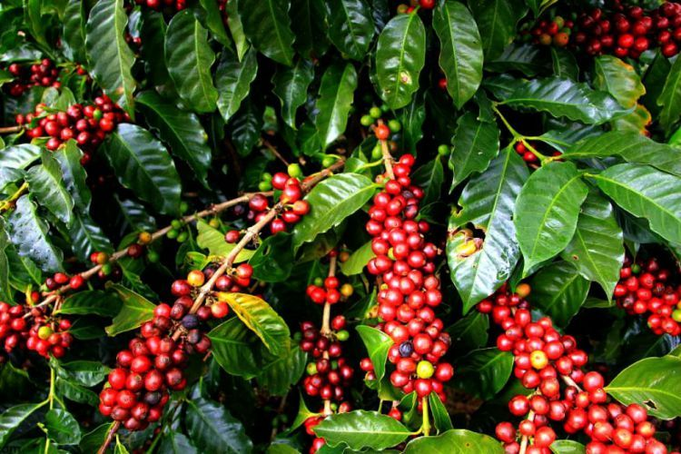
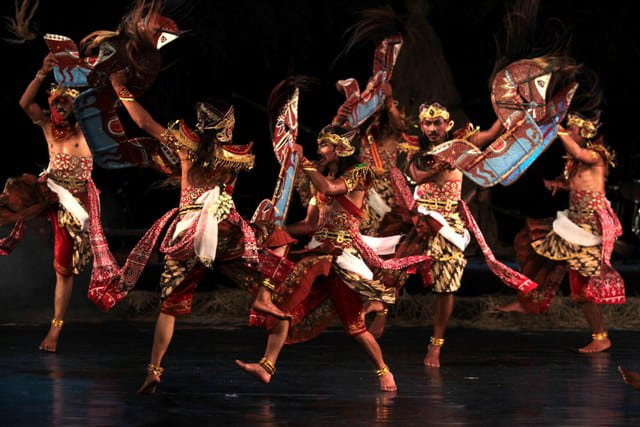
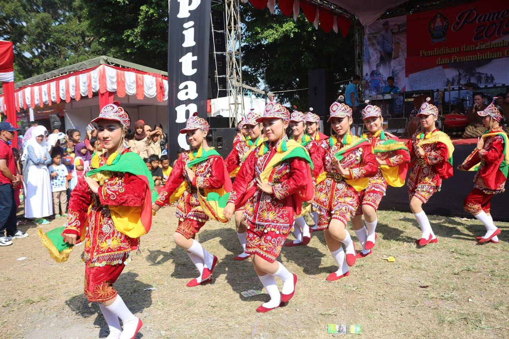
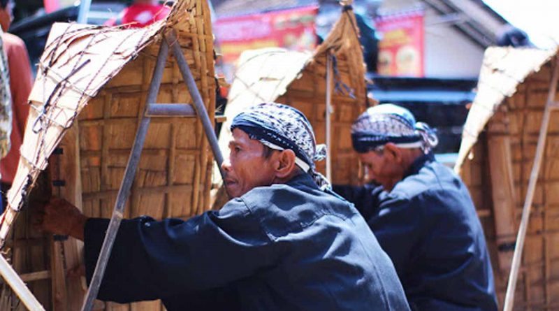
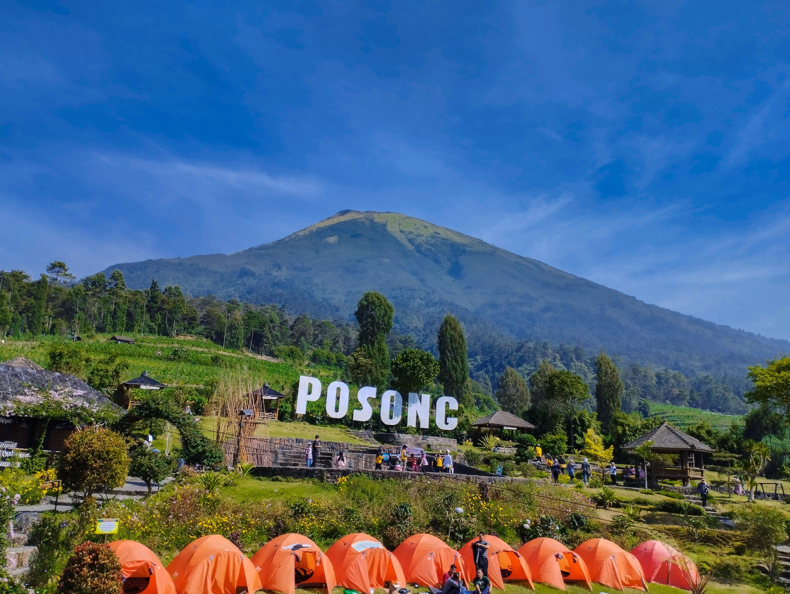
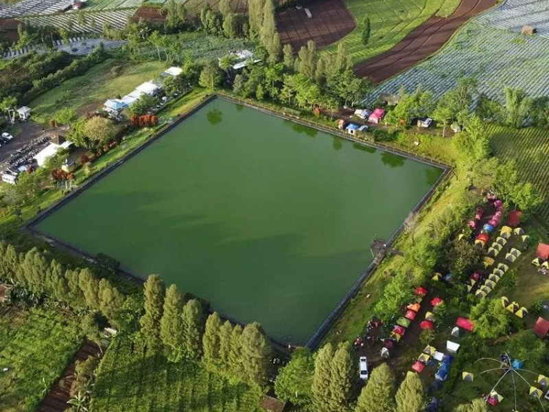
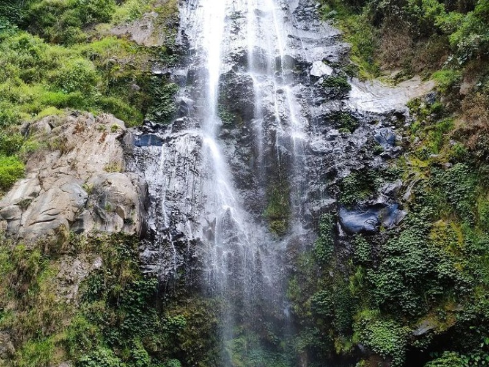

Sejarah

Dari buku sejarah karangan I Wayan badrika disebutkan bahwa Rakai Pikatan selaku raja Mataram Kuno berkeinginan menguasai wilayah Jawa Tengah. Namun untuk merebut kekuasaan dari raja Bala Putra Dewa selaku penguasa kerajaan Syailendra tidak berani. Maka untuk mencapai maksud tersebut Rakai Pikatan membuat strategi dengan mengawini Dyah Pramudha Wardani kakak raja Bala Putra Dewa dengan tujuan untuk memiliki pengaruh kuat di kerajaan Syailendra. Selain itu Rakai Pikatan juga menghimpun kekuatan yang ada di wilayahnya baik para prajurit dan senapati serta menghimpun biaya yang berasal dari upeti para demang. Pada saat itu yang diberi kepercayaan untuk mengumpulkan upeti adalah Demang Gong yang paling luas wilayahnya. Rakai Pikatan menghimpun bala tentara dan berangkat ke kerajaan syailendra pada tanggal 27 Mei 855 Masehi untuk melakukan penyerangan. Dalam penyerangan ini Rakai Pikatan dibantu Kayu Wangi dan menyerahkan wilayah kerajaan kepada orang kepercayaan yang berpangkat demang. Dari nama demang dan wilayah kademangan kemudian muncul nama Ndemanggung yang akhirnya berubah menjadi nama Temanggung.
Catatan sejarah Temanggung berasal dari :
- Prasasti Wanua Tengah III, Berkala arkeologi tahun 1994 halaman 87 bahwa Rakai Pikatan dinyatakan meninggal dunia pada tanggal 27 Mei 855 M.
- Prasasti Siwagrha terjemahan Casparis (1956 - 288), pada tahun 856 M Rakai Pikatan mengundurkan diri.
- Prasasti Nalanda tahun 860 (Casparis 1956, 289 - 294), Balaputra dewa dikalahkan perang oleh Rakai Pikatan dan Kayu Wangi.
- Wanua Tengah III, Berkala Aekeologi Tahun 1994 halaman 89, Rakai Kayu Wangi naik tahta tanggal 27 Mei 855 M.
- Dalam buku karangan I Wayan Badrika halaman 154, Pramudya Wardani kawin dengan Rakai Pikatan dan naik tahta tahun 856 M. Balaputra Dewa dikalahkan oleh Pramudha wardani dibantu Rakai Pikatan (Prasasti Ratu Boko) tahun 856 M.
Geografis

Kabupaten Temanggung terletak di tengah-tengah Propinsi Jawa Tengah dengan bentangan Utara ke Selatan 34,375 Km dan Timur ke Barat 43,437 Km. kabupaten Temanggung secara astronomis terletak diantara 110o23'-110o46'30" bujur Timur dan 7o14'-7o32'35" Lintang Selatan dengan luas wilayah 870,65 km2 (87.065 Ha). Batas-batas administrative Kabupaten Temanggung adalah sebagai berikut:
- Di sebelah Utara berbatasan dengan Kabupaten Kendal dan Kabupaten Semarang
- Di sebelah Timur berbatasan dengan Kabupaten Semarang dan Kabupaten Magelang
- Di sebelah Selatan berbatasan dengan Kabupaten Magelang
- Di sebelah Barat berbatasan dengan Kabupaten Wonosobo.
Wilayah Kabupaten Temanggung secara geo ekonomis dilalui oleh 3 jalur pusat kegiatan ekonomi, yaitu Semarang (77 Km), Yogyakarta (64 Km), dan Purwokerto (134 Km).
Permukaan wilayah Kabupaten Temanggung termasuk dataran tinggi. Pola topografi wilayah secara umum mirip sebuah cekungan atau depresi raksasa yang terbuka dibagian Tenggara, dibagian Selatan dan Barat dibatasi oleh 2 buah gunung yaitu Gunung Sumbing (3.260 m dpl) dan Gunung Sindoro (3.151 m dpl). Di bagian Utara dibatasi oleh sebuah pegunungan kecil yang membujur dari Timur Laut kearah Tenggara. Dengan topografi semacam itu, wilayah Kabupaten Temanggung memililki permukaan yang sangat beragam ditinjau dari ketinggian dan luas wilayah/kawasan. Sebagian wilayah Kabupaten berada pada ketinggian 500 m 1450 m (24,3 %), luasan areal ini merupakan daerah lereng gunung Sindoro dan Sumbing yang terhampar dari sisi selatan, Barat sampai dengan Utara wilayah
Potensi
Kabupaten Temanggung terletak diantara gunung Sumbing dan Sindoro. Hal ini mendukung adanya potensi dalam hasil pertanian. Berikut potensi hasil pertanian di Kabupaten Temanggung
1. Penghasil Tembakau Terbaik di Indonesia

Dilansir dari Liputan6.com, Rabu (15/12/2021), Kabupaten Temanggung terkenal dengan sektor pertaniannya, salah satunya adalah tembakau. Bahkan tembakau yang dihasilkan menjadi yang terbaik di Indonesia dan menjadi salah satu supplier pabrik rokok besar di Indonesia, yaitu PT Djarum dan Gudang Garam. Hal ini dikarenakan Kabupaten Temanggung yang dekat dengan Gunung Sindoro dan Gunung Sumbing membuat tanaman tembakau cocok ditanam di sana. Terdapat sekitar 200.000 petani yang membudidayakan tembakau dan mereka menggantungkan hidup dari hasil keuntungan tembakau tersebut.
2. Penghasil Kopi Terbesar di Jawa Tengah

Kabupaten Temanggung menjadi penghasil komoditas kopi dengan jenis robusta dan arabika yang ada di Jawa Tengah. Hampir 60 persen kopi yang dihasilkan di Jawa Tengah berasal dari Kabupaten Temanggung. Pada 2016, hasil kopi Kabupaten Temanggung pernah mengikuti kontes Speciality Coffee Association of America (SCAA) Expo di Atlanta, Amerika Serikat dan berhasil meraih juara kedua. Keikutsertaan kopi Kabupaten Temanggung dalam ajang tersebut membuat kopi Temanggung semakin terkenal hingga ke kancah internasional.
Kesenian
Kabupaten Temanggung memiliki kesenian daerah yang cukup banyak. Beberapa diantaranya yaitu :
1. Kuda Lumping / Jaran Kepang Temanggung

Jaranan atau Jaran Kepang Temanggungan merupakan kesenian turun-temurun
yang hidup dan berkembang sebagai tarian yang mengekspresikan kehidupan di
kalangan rakyat biasa atau di luar istana. Diperkirakan bahwa kesenian ini sudah ada sejak tahun 1930-an di Temanggung. Dahulu, di Desa Mergowati. Kecamatan Kedu, Kabupaten Temanggung, terdapat tempat pemeliharaan kuda- kuda pilihan Kerajaan Mataram Islam seperti yang tertulis dalam Serat Centhini yang terbit pada tahun 1814. Dari situlah muncul ide masyarakat untuk membuat gerak tari yang terinspirasi dari gerak-gerik kuda. Untuk memperjelas gerakan kuda itu, maka mereka membuat tiruan kuda yang awalnya dari bahan seadanya. seperti pelepah pisang, kulit sapi, sampai yang sekarang kita lihat yaitu anyaman bambu yang dilukis dan dihias seperti kuda. Pada tahun 1972. dilakukan inventarisasi gerakan tari jaran kepang oleh Pejabat Inspeksi Daerah Kebudayaan Kabupaten Temanggung dan kemudian distşunlah standar tari jaran kepang yang dianggap sebagai khas Temanggung. Dari sinilah muncul Tari Idakeb, sebuah ragam tari jaranan versi asli Temanggung. Idakeb adalah singkatan dari Inspeksi Daerah Kebudayaan.
2. Tari Bangilun

Bangilun merupakan seni tari tradisional yang bersifat religius. Tari asal daerah Temanggung ini pada mulanya diciptakan dengan tujuan untuk menyebarkan agama islam lewat budaya.Tari Bangilun tercipta kira-kira tahun 1900 pada saat Indonesia masih dijajah oleh Belanda. Pada perkembangannya, terdapat beberapa kelompok yang mengreasikan kostum tari bangilun sehingga terlihat lebih modern. Kostum tari bangilun modern memakai kain warna - warni juga kaos kaki. Celana panji dan rompi yang digunakan berbahan dasar Bludru
Alat musik yang digunakan dalam pertunjukan bangilun yaitu bedug/jidor, terbang, saron, gong dan versi modernnya dapat ditambah dengan musik keybord. Bangilun pada masa kini biasanya dipentaskan sebagai pertunjukan dan hiburan. Sedangkan pada jaman dahulu, tarian ini hanya ditampilkan dalam upacara adat saat panen padi.
3. Cengklungan

Cengklungan adalah kesenian rakyat pedesaan di daerah Temanggung. Keberadaan budaya yang satu ini diperoleh dari permainan anak-anak gembala.Cangklungan merupakan sebuah kesenian perpaduan antara instrumen, vokal, dan tari. Instrumen yang digunakan adalah payung krudhuk yang bagian dalamnya diberi rentang tali kawat ijuk atau kawat. Instrumen tersebut diberi nama cangklung. Dari sinilah nama budaya cangklungan berasal.
Kesenian cengklungan pun bisa dilengkapi dengan instrumen suling. Lagu-lagunya mengambil dari lagu-lagu daerah setempat. Sementara itu, tariannya merupakan ide baru sebagai pengembangan lebih lanjut. Jika diperhatikan, Tiga elemen dalam cengklungan (tari, lagu, dan instrumen) terkesan menggambarkan kehidupan pertanian setempat.
Wisata
Dikenal sebagai Negeri Tembakau, Kabupaten Temanggung di Provinsi Jawa Tengah memiliki banyak tempat wisata alam yang asri dengan lanskap pegunungan, persawahan, dan perbukitan hijau yang mendominasi. Sekarang pun, semakin bertambah objek wisata buatan dan tempat rekreasi yang dikembangkan dengan konsep kekinian agar menjangkau kalangan pengunjung yang lebih luas lagi.
1. Wisata Alam Posong

Berada di kaki Gunung Sindoro, tepatnya pada ketinggian 1.400 mdpl, spot wisata alam Posong banyak dituju wisatawan yang ingin berburu momen sunrise dan sunset khas Temanggung. Selain Gunung Sindoro, di sini kamu bisa melihat keindahan tujuh gunung lainnya yang populer di Jawa Tengah, loh. Di antaranya, Gunung Andong, Gunung Merbabu, Gunung Sumbing, Gunung Ungaran, Gunung Muria, Gunung Merapi, dan Gunung Telomoyo yang diselimuti kabut. Spot foto selfie banyak disediakan, salah satunya gardu pandang. Jika ingin bermalam di alam terbuka, pihak pengelola tempat wisata menyediakan fasilitas kemah dengan konsep soft-adventure.
2. Embung Kledung

Sempat viral di TikTok, tempat wisata Embung Kledung menawarkan wisata danau buatan yang berada di dataran tinggi. Udara sejuk dan panorama hijau yang disuguhkan, siap bikin kamu terpukau. Semakin menarik, karena kamu juga bakal dimanjakan dengan keindahan dua gunung kembar, yaitu Sumbing dan Sindoro yang dapat dilihat melalui gardu pandang dan ayunan gantung. Selain sebagai tempat wisata, Embung Kledung juga merupakan wadah penampungan air hujan di mana apabila musim kemarau, embung ini dimanfaatkan sebagai sumber mata air untuk pengairan dan kebutuhan warga setempat sehari-hari
3.Curug Trocoh Surodipo

Nikmati pesona Air Terjun Surodipo atau sering disebut Curug Trocoh pada ketinggian 120 mdpl. Letaknya yang cukup tersembunyi menjadikan Curug Trocoh sebagai salah satu destinasi hidden gem di Kabupaten Temanggung. Air terjun ini juga merupakan salah satu curug tertinggi di Jawa Tengah yang terdiri dari lima tingkat. Curug Trocoh dikelilingi tebing-tebing tinggi dan pepohonan hijau. Tak heran, suasana di sekitar curug sangat asri dan masih alami. Konon, air di curug ini tidak pernah surut sekalipun sedang musim kemarau. Hal itu kerap dikaitkan dengan arti nama curug yaitu Trocoh yang dalam bahasa Jawa berarti mengeluarkan air.